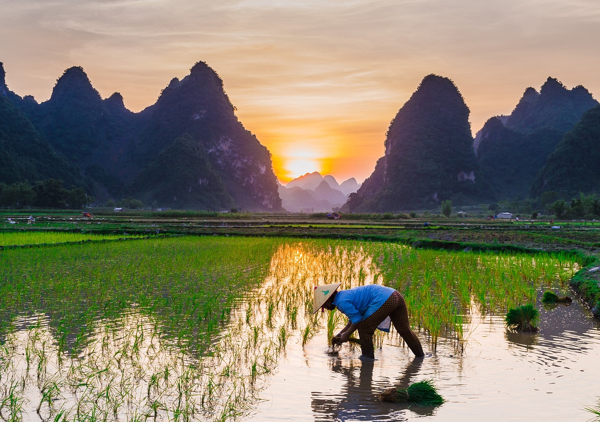

Rice comes in long-grain, medium- and short-grain textures. It grows easily in your backyard, in a garden bed or in buckets, given the right amount of soil, water, and other nutrients. Short-grain, medium-grain and long-grain rice thrive in wet conditions, specifically standing puddles of water or swamp-like conditions. Once the rice grains develop, the water in which they grow must drain so that you can harvest and mill the crop. After the harvesting and milling processes, you can eat the rice.
Part 1: Planting Your Rice
1:
Purchase rice seeds from any gardening or farmers supply store.
You may also buy rice seeds from a reputable supply store or seek help from the local agriculture field officer. There are six basic types of rice to choose from:
- Long-grain. This type of rice produces grains that are light and fluffy. It tends to be a bit drier than other varieties.
- Medium-grain. This type is moist, tender, slightly sticky, and a little creamy when cooked. It has the same texture as long-grain.
- Short-grain. When cooked, short-grain rice becomes soft and sticky. It's also a little more sweet – this is the rice to use with sushi.
- Sweet. This rice is sometimes called sticky rice, and is gooey when cooked. It’s often used for frozen products.
- Aromatic. This type of rice has more flavor and fragrance than other varieties. This category includes Basmati, Jasmine, Red, and Black japonica.
2:
Choose your planting location.
Make sure the soil in the area you're planting consists of slightly acidic clay for the best results. You may also plant your rice seeds in plastic buckets with the same type of soil. Wherever you plant, make sure you have a reliable water source and a way to drain that water when you need to harvest.
- Pick a location that receives full sunlight, as rice grows best with bright light and warm temperatures of at least 70° Fahrenheit (approximately 21° Celsius).
- Consider the season – your area needs to allow for 3 to 6 months of plant and flower growth. Rice needs a long, warm growing season, so a climate like the southern United States is best. If you don't have long periods of warmth, it may be best growing your rice inside.
3:
Gather at least 1 to 2 ounces (28.5 to 56.5 g) of rice seeds to sow.
Soak the seeds in water to prep them for planting. Allow them to soak for at least 12 hours but not longer than 36 hours. Remove the seeds from the water afterward.
- While your seeds are soaking, plan out where and how you want to plant them. Most prefer to plant the seeds in rows to make it easier to water and weed. Consider building trenches and blocking the ends so the water stays contained and dammed (berms can be used as well). That being said, the area doesn't need to stay flooded per se, it just needs to stay wet.
4:
Plant the rice seeds throughout the soil, during the fall or spring season.
Get rid of the weeds, till the beds, and level the soil. If you are using buckets, fill them with at least 6 inches (15 cm) of moist soil. Then add the rice seeds.
- Keep in mind that the area needs to be flooded with water. It's much easier to flood a few smaller spaces than one larger one. If you're planting outside, using several seed beds will be easier to manage and maintain.
- If you plant in the fall, be sure to de-weed come spring. The rice seeds need all the nutrients and space they can get.
Part 2:Caring for Your Seedlings
1:
Fill the buckets or the garden space with at least 2 inches (5.1 cm) of water.
However, this is just an old school recommendation. Plenty of people say that keeping the soil consistently moist is plenty – it doesn't necessarily need to be flooded.[3] This stage is up to you – just make sure it's wet.
- Add compost or mulch to the soil, slightly covering the rice grains. This will automatically tamp the seeds down into the soil. Organic compost holds moisture, so this is a good plan – especially in drier climes.
2:
Observe the water levels of the planting area, keeping the soil constantly wet.
If you'd like, maintain 2 inches (5.1 cm) of water for the rice to grow. At least make sure the soil is consistently wet, if not flooded. Expect to see shoots from the grains grow after about 1 week.
- If your plants are in buckets, you may want to consider moving them at night (when it gets cooler) to a warmer spot. Rice thrive in warmth, and if the temperature dips, you'll likely see stunted growth.
- To emphasize that flooding policies differentiate from person to person, commercial rice-producing agencies sometimes flood up to eight inches.[4] You may wish to up the water as your plants climb to the 7 inch mark. What you practice is up to you.
3:
Thin, or space out, the rice seeds to prevent crowding.
For best results, thin out the seedlings no more than 4 inches (10.2 cm) apart in rows that range between 9 to 12 inches (22.9 to 30.5 cm) apart. Allow the seeds to grow up to 7 inches (17.8 cm) tall, which takes on average of about one month.
- Some people choose to start their plants off in a nursery bed since movement is always a part of the process anyway. If you follow this practice, transplant them when they reach 5-7 inches in height. They should be planted about a foot apart into a muddy bed.
4:
Wait for the rice grains to mature.
This will take approximately 3 or 4 months; during this time, they can reach up to 17 inches tall. Let the water dry out or drain any excess water before removing the rice for harvesting. Over the course of the next two weeks, they'll turn green to gold – that's when you know they're ready.
- If you're farming your rice, you may wish to drain the soil when the plants are about 15 inches (37.5 cm) tall, flood, and then drain again. After that, continue as above, allowing the rice to dry and turn golden.
Part 3: Harvesting and Cooking Your Rice
1:
Cut the stalks and let them dry.
When the rice has turned gold (about 2 weeks or so after draining), they're ready. Cut the stalks just under the heads, where the rice grains are placed. You'll see little pockets at the top of the stalk that are unmistakably the hulls of the rice.
- Let them dry for 2-3 weeks. With the stalks cut, wrap them in newspaper and keep them in a dry, sunny place for 2-3 weeks. The moisture needs to fully dry out for you to get at the grains cleanly.
2:
Bake them at 180°F (82°C) for an hour.
Take the heads and pop 'em in the oven for roasting.[8] It shouldn't be too hot or the grains will burn. During this time, they should turn a darker shade of golden brown.
3:
Separate the kernels from the hulls.
After that time is up, let them cool. Then rub them with your hands (or use a mortar and pestle) to separate the kernels from the hulls.[9] Now you're dealing with rice grains you'll actually recognize. This will leave you with grains of rice that are ready for cooking and consumption.
- For the record, this last bit can be quite tedious – after a handful or two, you'll be glad for modern technology. Be patient – you're doing it right, it just takes a while. When you're done, you'll be left with an amazing store of food you produced all by yourself.